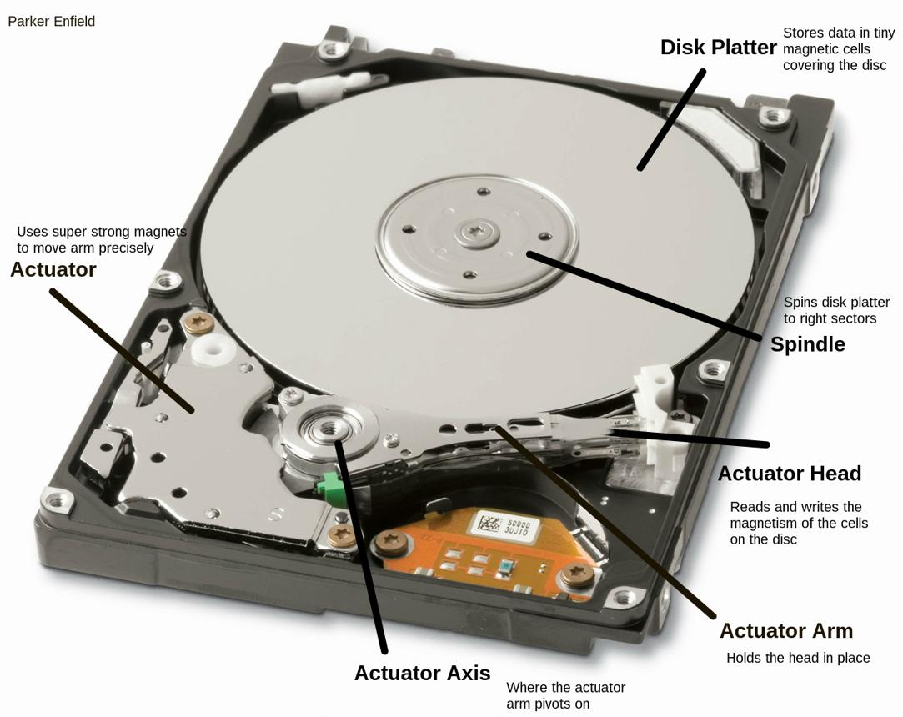
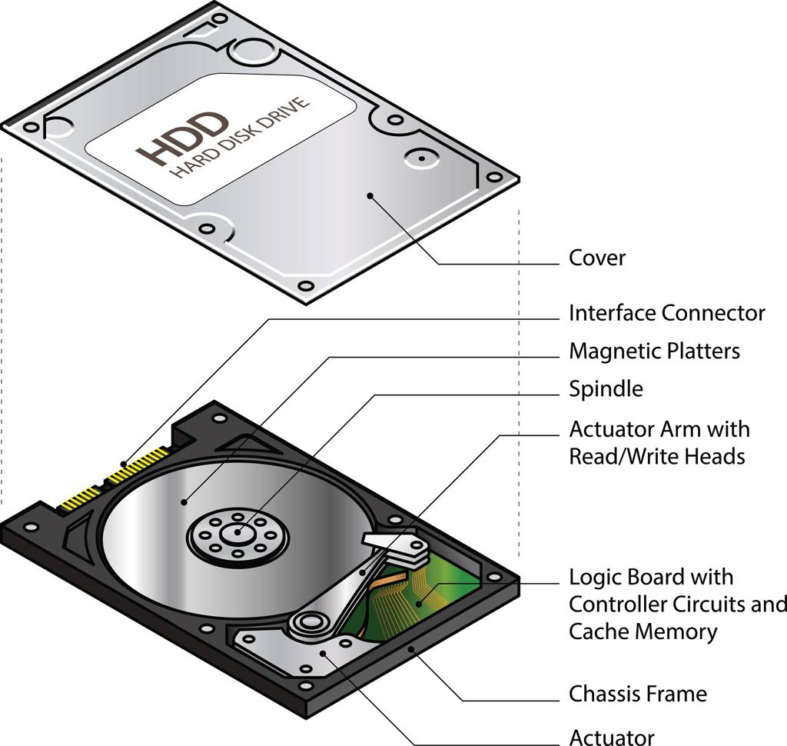
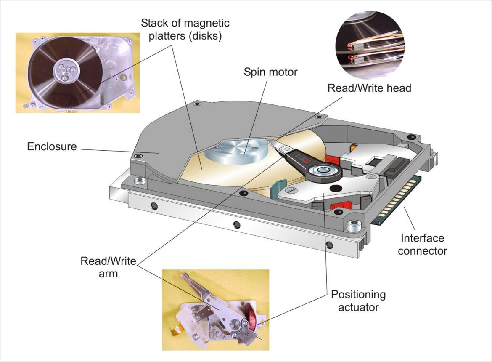
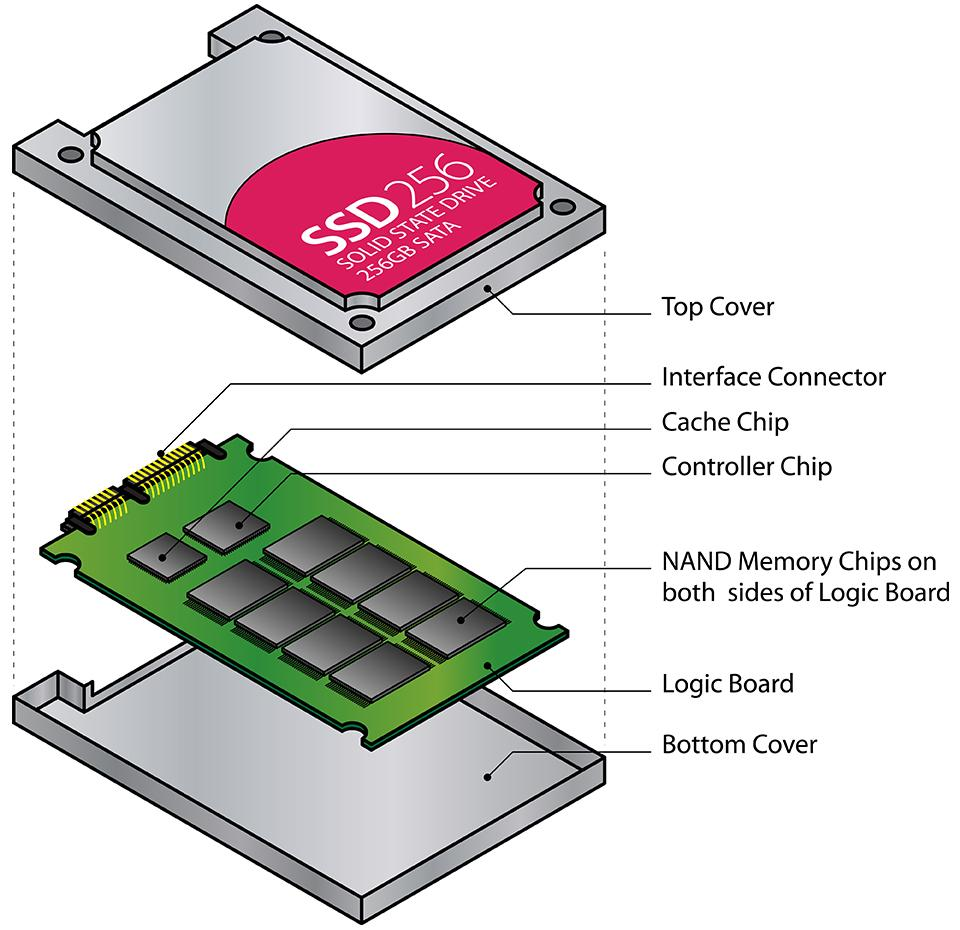
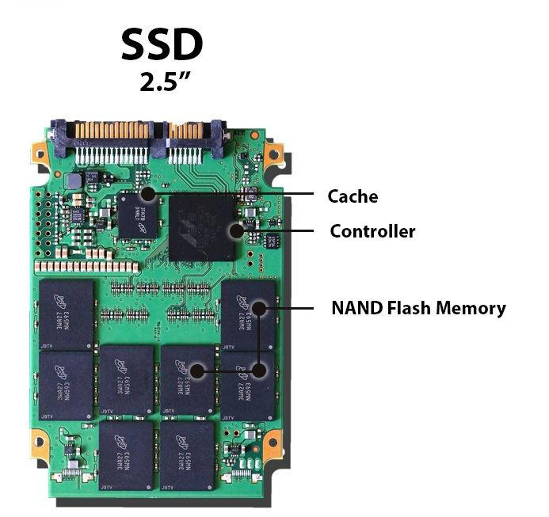
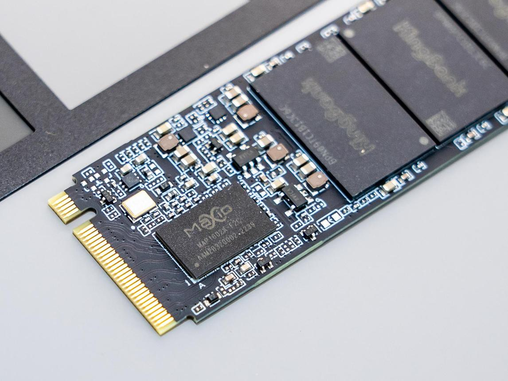

1. Purpose and Scope
Storage health is the process of monitoring, diagnosing, maintaining, and verifying the condition of storage devices used in industrial PCs (IPCs), CNC systems, HMI stations, SCADA servers, vision systems, robot controllers, and production test benches.
Storage devices contain the operating system, industrial applications, configuration files, PLC and CNC projects, inspection recipes, logs, databases, historical production data, and recovery images. A storage failure can therefore cause much more than a computer boot problem. It can stop production, interrupt data collection, corrupt application files, or make a recovery significantly more difficult.
The objective is to identify storage degradation early, prevent avoidable data loss, maintain acceptable performance, and ensure that critical industrial systems can be recovered when a storage device fails.
This topic covers:
- HDD and SSD operating principles.
- Storage health indicators and diagnostics.
- SMART data and failure prediction limitations.
- SSD endurance, wear, and write amplification.
- HDD mechanical failure symptoms.
- Industrial storage environments.
- Preventive maintenance and replacement planning.
- Backup, cloning, and recovery considerations.
- Troubleshooting and practical industrial examples.
2. What Is an HDD?
An HDD (Hard Disk Drive) stores data magnetically on rotating platters. A mechanical actuator moves read/write heads across the platter surfaces.



7
2.1 HDD Operating Principle
The main components are:
- Platters: Rotating magnetic disks that store data.
- Spindle motor: Rotates the platters.
- Read/write heads: Read and write magnetic information.
- Actuator arm: Positions the heads.
- Controller electronics: Manage communication and drive operations.
- Cache: Temporarily buffers data.
Because HDDs contain moving parts, they can be affected by vibration, shock, mechanical wear, spindle problems, and head failures.
2.2 HDD Characteristics
| Characteristic | Description |
|---|---|
| Storage technology | Magnetic recording |
| Moving parts | Yes |
| Random-access performance | Generally slower than SSDs |
| Shock sensitivity | Higher than typical SSDs |
| Capacity per cost | Often economical for large storage needs |
| Failure indicators | Reallocated sectors, pending sectors, abnormal noises, read errors |
| Common use | Bulk storage, older industrial PCs, historical data archives |
A clicking or grinding HDD may indicate mechanical trouble. Repeatedly restarting it or running intensive scans can worsen the situation. If important data is not backed up, stop unnecessary access and follow the approved recovery or data-preservation procedure.
3. What Is an SSD?
An SSD (Solid-State Drive) stores data in NAND flash memory and uses an electronic controller to manage storage operations.



7
3.1 SSD Operating Principle
An SSD contains:
- NAND flash memory: Stores data without continuous power.
- Controller: Manages reads, writes, error correction, and flash organization.
- Firmware: Controls device behavior and internal maintenance.
- DRAM or other buffering: May assist with mapping and performance, depending on design.
- Flash translation layer (FTL): Maps logical block addresses to physical flash locations.
- Error-correction mechanisms: Detect and correct certain forms of data corruption.
NAND flash cells have finite write endurance. The controller uses wear leveling and other techniques to distribute writes and extend device life.
3.2 SSD Characteristics
| Characteristic | Description |
|---|---|
| Storage technology | NAND flash |
| Moving parts | No |
| Access performance | Generally faster than HDDs |
| Shock resistance | Generally better than HDDs |
| Write endurance | Finite and dependent on device design |
| Failure indicators | Wear, media errors, spare-block depletion, controller faults |
| Common use | Industrial PCs, HMI systems, SCADA servers, modern CNC systems |
SSDs are not indestructible. They can fail because of flash wear, controller faults, power problems, firmware issues, overheating, or manufacturing defects.
4. HDD vs. SSD
| Feature | HDD | SSD |
|---|---|---|
| Storage mechanism | Magnetic platters | NAND flash |
| Mechanical components | Yes | No moving storage parts |
| Random read/write | Generally slower | Generally faster |
| Shock and vibration | More mechanically sensitive | Usually more resistant |
| Wear mechanism | Mechanical and magnetic-media degradation | Flash wear and electronic/controller degradation |
| Typical diagnostic indicators | Reallocated sectors, pending sectors, seek errors | Percentage used, available spare, media errors, TBW |
| Failure behavior | May show noise or increasing read errors | May fail without obvious physical symptoms |
| Power-loss behavior | Depends on drive and system | Depends on drive, firmware, cache, and power-loss protection |
| Best maintenance approach | Health monitoring and mechanical-risk control | Health and endurance monitoring plus write-load control |
Do not select storage solely by price or speed. Industrial suitability, temperature range, vibration rating, endurance, interface compatibility, firmware support, and replacement availability are also important.
5. Storage Interfaces and Form Factors
5.1 Common Interfaces
| Interface | Description | Industrial consideration |
|---|---|---|
| SATA | Common interface for HDDs and SSDs | Verify connector, supported protocol, and capacity compatibility |
| SAS | Enterprise storage interface | Common in server-class equipment; not interchangeable with ordinary SATA in every system |
| PCIe | High-speed expansion interface | Used by NVMe SSDs and other devices |
| NVMe | Storage protocol designed for non-volatile memory over PCIe | Requires compatible firmware, OS, and hardware |
| USB | External storage interface | Useful for approved service media and backups, subject to security policy |
5.2 Common Form Factors
- 3.5-inch HDD.
- 2.5-inch HDD or SATA SSD.
- M.2 SSD.
- PCIe add-in-card storage.
- Proprietary industrial storage modules.
An M.2 drive is not automatically an NVMe drive. M.2 describes a physical form factor; the supported protocol may be SATA or PCIe/NVMe.
Before replacement, confirm the actual interface, keying, dimensions, supported capacity, boot compatibility, and operating temperature range.
6. Storage Failure Modes
6.1 HDD Failure Modes
- Mechanical wear.
- Head or actuator failure.
- Spindle motor problems.
- Surface degradation.
- Increasing bad sectors.
- Excessive vibration or shock.
- Controller electronics failure.
- Power-related damage.
6.2 SSD Failure Modes
- NAND flash wear.
- Available spare-block depletion.
- Controller failure.
- Firmware defects.
- Internal mapping or metadata corruption.
- Power-loss-related corruption.
- Overheating.
- Interface or connector problems.
6.3 Logical Storage Problems
Not every storage-related problem means the physical drive is failing.
Examples include:
- Corrupted file system.
- Damaged boot configuration.
- Application logs filling the drive.
- Accidental file deletion.
- Incorrect partition layout.
- Malware or unauthorized changes.
- Database corruption.
- Operating system update failure.
Distinguish physical storage health from logical file-system and application health. Replacing a healthy SSD will not fix a badly configured application that continuously fills its own log directory.
7. SMART: Self-Monitoring, Analysis and Reporting Technology
SMART is a collection of device monitoring and reporting mechanisms supported by many HDDs and SSDs. The available attributes and their interpretation depend on the device manufacturer and model.
SMART can provide early warning of some failure conditions, but a healthy SMART status does not guarantee that a drive will not fail.
7.1 Important HDD SMART Indicators
| Indicator | Meaning | Maintenance significance |
|---|---|---|
| Reallocated sector count | Sectors replaced with spare sectors | An increasing count can indicate media degradation |
| Current pending sector count | Sectors awaiting successful read or reallocation handling | Nonzero values warrant investigation |
| Offline uncorrectable sectors | Sectors that could not be corrected during relevant testing | May indicate unreadable data |
| Spin retry count | Attempts needed to achieve successful spindle spin-up | May indicate mechanical or power problems |
| Command timeout | Commands that exceeded expected time | May indicate drive, connection, controller, or power issues |
| Temperature | Reported drive temperature | Compare with manufacturer limits |
Attribute names, raw values, and thresholds vary. Interpret trends and vendor documentation rather than assuming that every manufacturer uses identical definitions.
7.2 Important SSD Health Indicators
| Indicator | Meaning | Maintenance significance |
|---|---|---|
| Percentage used | Estimated portion of rated endurance consumed | Higher values indicate greater endurance consumption |
| Available spare | Remaining spare capacity available to the controller | Low values may indicate elevated risk |
| Media and data integrity errors | Reported storage media or integrity errors | Investigate promptly |
| Unsafe shutdowns | Shutdown events that did not follow the expected procedure | Review power quality and shutdown practices |
| Data units written | Reported host write volume in supported NVMe telemetry | Useful for estimating workload |
| Temperature | Reported drive temperature | Compare with operating limits |
| Critical warning | Device-reported critical health conditions | Requires prompt investigation |
SMART attributes differ across SATA, SAS, and NVMe devices. Use the appropriate diagnostic utility and manufacturer documentation.
8. SSD Endurance and TBW
SSD endurance is commonly described using TBW (Terabytes Written), which indicates a specified amount of host data written over the device's rated life under the manufacturer's conditions.
For example, an SSD rated at 300 TBW has a stated endurance rating of 300 terabytes of writes. This is not a promise that the drive will fail immediately at that value or remain healthy indefinitely below it.
8.1 Estimate Write Consumption
If a drive receives an average of 20 GB of host writes per day, its approximate annual host writes are:
That is approximately 7.3 TB per year using decimal units.
For a hypothetical 300 TBW rating, a simple endurance estimate would be:
This is only a mathematical estimate based on the assumed host-write rate. It is not a realistic service-life guarantee. Actual life can be limited by calendar aging, temperature, controller failure, power events, workload pattern, firmware, data retention, and other factors.
8.2 Host Writes vs. NAND Writes
Host writes are the data sent by the operating system and applications. NAND writes are the physical writes performed internally by the SSD.
Write amplification occurs when the SSD must write more physical data than the host requested, for example because flash pages and blocks have different erase and write granularities.
A higher write amplification factor can increase flash wear. Its exact value depends on workload, free space, controller design, and internal maintenance operations.
8.3 Industrial Write-Heavy Workloads
Common write sources include:
- SCADA historical data.
- Database transaction logs.
- Vision images.
- Continuous test-bench measurements.
- Windows event logs.
- Application diagnostic logs.
- Temporary files.
- Swap or paging activity.
- Repeated local backup jobs.
If an IPC writes large amounts of data continuously, investigate the workload and consider a suitably rated industrial or enterprise SSD. Do not simply disable required logs or monitoring to reduce writes.
9. Storage Capacity and Free Space
A drive can be physically healthy but operationally unusable when it runs out of free space.
9.1 Why Free Space Matters
Low free space can cause:
- Failed OS updates.
- Application crashes.
- Database write failures.
- Missing logs.
- Failed backups.
- Poor system responsiveness.
- Inability to create temporary files.
- Failed production result storage.
Some SSD workloads also benefit from sufficient free space for internal garbage collection and write management.
9.2 Free-Space Monitoring
Monitor both absolute free space and the percentage available.
For a 256 GB drive with 40 GB free:
The acceptable threshold depends on the application, update requirements, logging rate, and recovery needs. Establish site-specific warning and critical limits rather than treating one percentage as universal.
9.3 Safe Cleanup
Before removing files:
- Identify what is consuming the space.
- Determine whether the data is required for production, traceability, or audit.
- Check the retention policy.
- Preserve required logs and backups.
- Use approved cleanup tools or application procedures.
- Verify that the application still functions correctly.
Do not delete unfamiliar directories, databases, system files, or vendor application data simply because they are large.
10. Temperature, Vibration, and Power Quality
Industrial environments can be harsh on storage devices.
10.1 Temperature
Excessive heat can accelerate component aging and cause thermal throttling or faults. Very low temperatures can also be outside the supported operating range for certain drives.
Check the actual device temperature and compare it with the manufacturer's operating limits. Also investigate the IPC enclosure, airflow, filters, fans, and surrounding heat sources.
10.2 Vibration and Shock
HDDs are particularly sensitive to mechanical vibration and shock during operation. SSDs have no rotating platters, but connectors, solder joints, controller electronics, and other components can still be affected by vibration.
Use storage devices rated for the actual environment. Secure mounting, proper connectors, and approved mechanical installation practices matter.
10.3 Power Quality
Unexpected power loss can interrupt writes and damage file-system or application consistency. Some SSDs have power-loss protection, but not all consumer or industrial drives provide the same protection.
Consider:
- Reliable power supply.
- Suitable UPS or DC backup arrangements where appropriate.
- Approved shutdown procedures.
- Power-loss protection for critical storage workloads.
- Database-consistent backup methods.
- Investigation of repeated unsafe shutdowns.
A UPS reduces some power-related risks but does not replace data backups or storage health monitoring.
11. Storage Diagnostic Tools
11.1 Windows Tools
| Tool or command | Purpose | Important limitation |
|---|---|---|
| Task Manager | Basic disk activity and utilization | Not a complete physical health diagnostic |
| Resource Monitor | Detailed disk I/O activity | Does not replace vendor health diagnostics |
| Disk Management | Partition and volume inspection | Does not establish complete drive health |
| Event Viewer | Storage, controller, and file-system events | Requires interpretation and correlation |
PowerShell Get-PhysicalDisk |
Reports supported physical disk information | Returned health data depends on device and storage stack |
PowerShell Get-StorageReliabilityCounter |
Retrieves supported reliability information | Not available or complete for every device |
chkdsk |
Checks and can repair file-system issues | Not a substitute for physical drive diagnostics |
| Manufacturer diagnostic utility | Device-specific health and tests | Use a compatible version and approved test method |
Example PowerShell commands:
Get-PhysicalDisk |
Select-Object FriendlyName, MediaType, HealthStatus, OperationalStatus, Size
For supported devices:
Get-PhysicalDisk | Get-StorageReliabilityCounter |
Select-Object DeviceId, Temperature, Wear, ReadErrorsTotal, WriteErrorsTotal
The exact properties and returned values depend on Windows, the device driver, the storage controller, and the drive's telemetry support. Missing values do not automatically indicate a fault.
11.2 Linux Tools
Depending on the distribution and device:
smartctlcan retrieve supported SMART information.nvme-clican inspect NVMe health and device logs.lsblkcan list block devices and partitions.dmesgcan reveal kernel storage and I/O errors.iostatcan help analyze storage I/O activity.
Use approved tools and avoid destructive tests on production equipment.
11.3 Diagnostic Test Types
- Health status check: Reads available health information.
- Short self-test: Performs a limited internal diagnostic where supported.
- Extended self-test: Performs a more comprehensive internal diagnostic where supported.
- Read test: Checks the ability to read selected data.
- File-system check: Examines logical file-system consistency.
- Performance test: Measures throughput or latency under defined conditions.
Extended tests and performance benchmarks can create additional I/O load. Schedule them appropriately and follow the manufacturer's recommendations.
12. Recognizing Early Warning Signs
12.1 HDD Warning Signs
- Increasing reallocated or pending sectors.
- Repeated I/O errors.
- Slow file access.
- Unexpected operating system freezes.
- Unusual clicking or grinding sounds.
- Repeated device resets or timeouts.
12.2 SSD Warning Signs
- Increasing media errors.
- Low available spare capacity.
- Endurance percentage approaching its rated limit.
- Read-only or degraded operating state.
- Unexpected device disappearance.
- Repeated storage resets.
- Unexplained write failures.
- Increasing latency or application stalls.
12.3 Important Diagnostic Distinction
Slow performance is not proof of a failing drive. It may also result from a saturated CPU, insufficient RAM, a busy database, a faulty cable, a controller problem, a background update, or an application issue.
Correlate device health, event logs, performance counters, recent changes, and physical conditions before deciding on replacement.
13. Storage Replacement Planning
Storage replacement should be planned before a critical device fails whenever possible.
13.1 Replacement Criteria
Consider replacement or immediate engineering assessment when:
- The device reports a critical health warning.
- Errors are increasing.
- Uncorrectable media errors are present.
- The drive has become unreliable or intermittently disappears.
- SSD endurance or available spare indicators reach the manufacturer's action threshold.
- The drive is outside its supported environmental limits.
- The manufacturer has identified a relevant defect.
- The device can no longer meet the system's reliability requirements.
A device that reports healthy status may still need replacement based on service history, criticality, or an approved lifecycle plan.
13.2 Select a Compatible Replacement
Verify:
- Form factor.
- Interface and protocol.
- Supported capacity.
- OS boot compatibility.
- Firmware requirements.
- Operating temperature.
- Shock and vibration ratings.
- Endurance rating.
- Power-loss protection requirements.
- Vendor qualification or approval.
- Availability of a suitable recovery image.
Avoid assuming that a physically compatible SSD is fully compatible with a legacy industrial PC.
14. Storage Cloning and Recovery
Replacing a storage device can require both hardware work and software recovery.
14.1 Before Replacement
- Confirm the exact IPC and storage device.
- Check current storage health.
- Preserve critical data and application configuration.
- Verify the latest usable backup.
- Confirm that the recovery media works.
- Record partition layout and boot configuration.
- Check licensing and hardware-bound activation.
- Obtain required authorization.
- Plan the maintenance window.
If the old drive is failing, minimize unnecessary writes and repeated power cycles. Prioritize data preservation using an appropriate recovery method.
14.2 Cloning Considerations
Cloning may be suitable when the original drive is readable and the replacement is compatible.
However:
- A clone copies existing logical errors and unwanted software.
- A damaged source may produce an incomplete clone.
- The target may need to be equal to or larger than the source, depending on the cloning tool and partition layout.
- A different controller or drive can affect boot behavior.
- Licenses or applications may react to hardware changes.
- File-system and application consistency must be considered.
For a failing drive containing valuable data, a fault-tolerant imaging or professional recovery approach may be safer than repeatedly attempting ordinary file copies.
14.3 After Replacement
- Verify BIOS/UEFI detection.
- Confirm the intended boot device.
- Check OS startup.
- Verify storage and controller diagnostics.
- Confirm required drivers and applications.
- Test PLC, HMI, CNC, robot, vision, or other relevant communications.
- Verify production data and logging.
- Complete the required functional and safety checks.
- Capture the new device identity and configuration.
- Update the asset and recovery records.
15. Practical Example: Industrial PC SSD Degradation
Assume an IPC used for a production test bench begins responding slowly. Operators report delayed HMI updates, and Windows logs show recurring storage-related events.
Step 1: Assess the Symptoms
Record the time, frequency, application impact, and recent changes. Check whether the delay affects only the HMI or also the operating system and other services.
Step 2: Inspect Storage Health
Review the SSD's available health data, wear indicators, media errors, temperature, and event logs. Check whether the drive is disappearing or experiencing repeated resets.
Step 3: Check Alternative Causes
Inspect CPU, RAM, disk activity, free space, network performance, and application logs. Determine whether a background task or growing log file is causing the slowdown.
Step 4: Assess Data Risk
If the drive shows serious failure indicators, avoid unnecessary stress and prioritize a verified backup or suitable recovery image. Preserve required production and traceability data.
Step 5: Replace if Required
Install a compatible replacement drive and restore the approved system image and application configuration, or follow the validated rebuild procedure.
Step 6: Validate the IPC
Confirm OS startup, driver health, application runtime, PLC communications, measurement acquisition, and result storage. Perform the required functional and quality checks.
Step 7: Close the Maintenance Record
Record the old and new drive identities, diagnostic evidence, backup and recovery method, test results, and updated replacement history.
The goal is not merely to replace a drive that looks unhealthy. It is to prevent a storage problem from becoming an uncontrolled production outage or data-loss incident.
16. Preventive Maintenance Schedule
The actual frequency must be based on device criticality, workload, vendor guidance, and site policy.
| Activity | Suggested frequency | Purpose |
|---|---|---|
| Check free space | Routine for critical IPCs | Prevent capacity-related failures |
| Review storage event logs | Periodically and after incidents | Identify I/O errors and device resets |
| Review SMART or NVMe health | Periodically and after warnings | Detect degradation trends |
| Review temperature | Routine or through monitoring | Detect cooling or environmental problems |
| Check write workload | Periodically on write-intensive systems | Identify excessive logging or wear |
| Verify backups | According to backup policy | Maintain recoverability |
| Test restoration | Scheduled and risk-based | Confirm recovery capability |
| Inspect mounting and connectors | During approved maintenance | Detect mechanical or connection problems |
| Review lifecycle and replacement availability | Periodically | Reduce emergency replacement risk |
| Update inventory after replacement | Whenever a device changes | Maintain traceability |
17. Storage Health Checklist
Routine Checks
- Confirm device identity, model, and interface.
- Check reported health status and available diagnostic indicators.
- Review storage-related event logs.
- Check temperature and environmental conditions.
- Check free capacity and usage trends.
- Review write workload on SSDs.
- Investigate recurring timeouts or I/O errors.
- Confirm backup status for critical data.
When a Warning Appears
- Record the warning and diagnostic evidence.
- Assess the impact on production and data integrity.
- Check whether the drive is still reliable enough for further access.
- Prioritize data preservation when failure is suspected.
- Consult manufacturer guidance and the approved recovery procedure.
- Arrange replacement or specialist assessment when required.
- Validate the system after corrective action.
- Update the maintenance and asset records.
After Replacement
- Verify the replacement's compatibility.
- Confirm OS boot and storage detection.
- Check application and driver functionality.
- Verify industrial communications.
- Verify critical data and production logging.
- Complete required functional tests.
- Update inventory, baseline, and backup records.
18. Interview Questions and Answers
Q1. What is the main difference between HDD and SSD?
An HDD stores data magnetically on rotating platters and has mechanical components. An SSD stores data in NAND flash and has no moving storage parts.
Q2. What is SMART?
SMART is a set of device monitoring and reporting mechanisms that provides health indicators for supported storage devices.
Q3. Does a healthy SMART status guarantee that a drive will not fail?
No. SMART can detect some warning conditions, but sudden controller, electronic, firmware, or other failures can still occur.
Q4. What is SSD TBW?
TBW is the rated amount of host data written over an SSD's specified endurance rating, expressed in terabytes.
Q5. What is write amplification?
It is the ratio of physical NAND writes to host writes. Internal flash management can cause the SSD to write more data than the host requested.
Q6. Why is free space important on an IPC?
Low free space can interrupt updates, logging, database operations, temporary-file creation, and application functions.
Q7. Can chkdsk repair a physically failing drive?
No. It addresses file-system consistency and certain logical errors. It is not a physical drive repair tool and can place additional I/O load on a failing device.
Q8. Why might an SSD fail even when its endurance rating has not been reached?
It can fail because of controller faults, firmware problems, power events, overheating, manufacturing defects, or other component failures.
Q9. What should be done when an HDD starts clicking and contains important data?
Avoid unnecessary access and repeated power cycling. Follow the approved data-preservation procedure and seek appropriate recovery assistance when needed.
Q10. Why should a cloned drive be tested before production release?
Cloning does not prove that the image is complete, bootable, compatible with the replacement hardware, or operationally correct. The recovered system must be verified.
Q11. Is a physically compatible SSD always a suitable industrial replacement?
No. Protocol compatibility, firmware, endurance, temperature range, vibration rating, power-loss behavior, and vendor support must also be considered.
Q12. What is the most important storage maintenance principle?
Monitor degradation, protect important data, verify recovery capability, and replace unreliable devices before they cause an uncontrolled failure whenever feasible.
19. Final Principles
- HDDs and SSDs fail in different ways, but neither should be treated as permanently reliable.
- Monitor health indicators, error trends, temperature, and capacity.
- Treat SMART as an early-warning source, not a guarantee.
- Evaluate SSD endurance against actual workload rather than TBW alone.
- Distinguish physical device faults from file-system, application, and configuration problems.
- Preserve important data before conducting unnecessary diagnostic operations on a failing device.
- Select industrial storage based on actual operating conditions and compatibility.
- Verify backups and test restoration procedures.
- After replacement, validate the complete IPC and its industrial interfaces.
- Maintain accurate device inventories and replacement history.
NEXT TOPIC
02_PLAN_WISE_2026\02_INDUSTRY3_0\26_IPC_Support\03_RAM - RAM